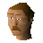

Ship Yard
Location at 2990, 3055 · Karamja
Open on the world map → Open in knowledge graph → Below: Ship Yard (underground)
NPCs
| NPC | Level | Spawns | Notable drops |
|---|---|---|---|
| 53 | 10 | ||
| 44 | 14 | ||
| 32 | 4 | Coins, Snape grass, Limpwurt root, Herb drop table | |
| Albatross | 26 | 2 | |
| 26 | 1 | ||
| 26 | 6 | ||
| 23 | 1 | ||
 Shipyard worker | 11 | 5 | |
| 11 | 9 | ||
| 5 | 5 | ||
| 3 | 22 | ||
| 1 | 2 | ||
| 2 | |||
| 1 |